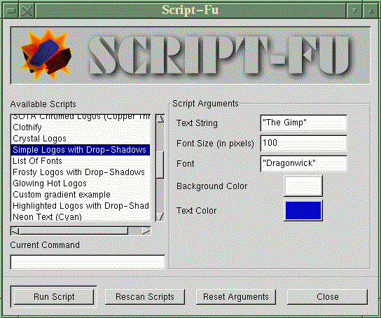

![[ TABLE OF CONTENTS ]](../gx/indexnew.gif)
![[ FRONT PAGE ]](../gx/homenew.gif)

Allow me to state up front that I'm not a computer graphics professional (or even much of an amateur!) and I've never used any of the common commercial tools such as Photoshop. Thus it's not too surprising that my efforts to use version 0.54 of the Gimp, the GNU-licensed image-editing tool developed by Spencer Kimball and Peter Matis, often were frustrating. But one day I happened upon the developer's directory of the Gimp FTP site and saw there a beta release, version 0.99.9. This sounded awfully close to version 1.00, so I thought I'd give it a try.
At first it absolutely refused to compile. After downloading this large archive, I wasn't about to give up, and after several false starts I found that if I compiled each subdirectory first, followed by installation of the various libs and running ldconfig to let ld.so know about them, the main Makefile in the top directory would compile without errors. The Motif libs aren't needed with this release, as the new Gimp ToolKit (GTK) has been implemented as a replacement.
An analogy occurred to me as I gradually discovered how complicated and powerful this application is. It's the XEmacs of image editors! The plug-ins and scripts are like Emacs LISP extensions and modes, both in their relationship with the parent application and in their origin: contributed by a wordwide community of users and developers.
This release does have a few problems. Occasionally it will crash, but politely; i.e. it doesn't kill the X-server or freeze the system. The benefits of this release far outweigh these occasional inconveniences, especially for a rank beginner.
Image editing is a notorious consumer of memory. This new version has a method of attempting to minimize memory usage called tile-based memory management. This allows the Gimp to work with images larger than can be held in physical memory. Disk space is heavily used instead, so make sure you have plenty of swap!
A new file format specific to the Gimp, (*.xcf), allows an image to be saved with it's separate layers, channels, and tiles intact. In ordinary image formats all such information disappears when the image is saved. This would be ideal if an image had to be changed at a later date, allowing effective resumption of an editing session.
An extension is like a plug-in but is not called from or associated with a specific image; the first of these is described in the next section.
The Gimp now has a built-in scripting language, based on Scheme, which bears some resemblance to LISP. An extension called Script Fu (which can be started from the Gimp menubar) can read these scripts and perform a series of image manipulations on user-specified text or images, using user-selected fonts and colors. What this means for a beginner like myself is that a complicated series of Gimp procedures (which would probably take me a day to laboriously figure out) is now automated. A collection of these scripts is installed along with the other Gimp files, and more are periodically released by skilled Gimp users. Many of the scripts facilitate the creation of text logos and titles suitable for use in web pages.
Here is a screenshot of the Script Fu window:

As you can see, entry-boxes are available for filling in. Most scripts have default entries, and scripts will certainly fail if the default font is not available on your system.
This script-processing ability should greatly expand the popularity of the Gimp. I showed Script-Fu to my teenage kids and they took to it like ducks to water, whereas before they had been intimidated by the Gimp's complexity and deeply nested menus. A little easy success can give enough impetus to explore further.
I believe that among the most important factors contributing to the success and continuing development of the Gimp are the built-in "hooks" allowing third-party plug-in modules to add capabilities to the program. The GTK ends up doing all of the mundane tasks such as creating windows and their components; all a plug-in needs to do is manipulate graphics data. One result is that the plug-ins are surprisingly small considering what they can accomplish.
One reason the release of Gimp version 1.00 has been delayed is that the
plug-ins which had been written for version 0.54 won't work with version 1.00
(or any of the recent betas). This was partly due to the switch from Motif to
the GTK, and partly to the new memory-management scheme. The plug-in
developers have been busily modifying their modules and the great majority
have been successfully ported. Since the release of 0.99.9 several
interesting new plug-ins have been released, including:
As well as these and other new plug-ins, many of the old ones were enhanced in the process of adapting them to the new release. Several now have real-time preview windows, in which the results of changes can be seen without committing them.
The Gimp has never had much documentation included with the archive. This will eventually be remedied; the Gimp Documentation Project, analogous to the Linux Documentation Project, will be making documentation freely available. Until the fruits of that project begin to appear there are some excellent tutorials, written by various charitable Gimp users and developers and available on the WWW. The Gimp Tutorials Collection is a site which has links to many of the tutorials out there. The tutorials situation is in flux at the moment, as some are specific to Gimp 0.54 while others are intended for the newer betas.
A site which has helped me get started is Jens Lautenbacher's Home Page. His tutorials are very lucid and easy to follow, and are specific to version 0.99.9. This site is also an inspiring example of how the Gimp can contribute to the design of a web-page.
If you'd like to keep up with the rapidly evolving Gimp scene, these links
are among the best I've found and can serve as starting points.